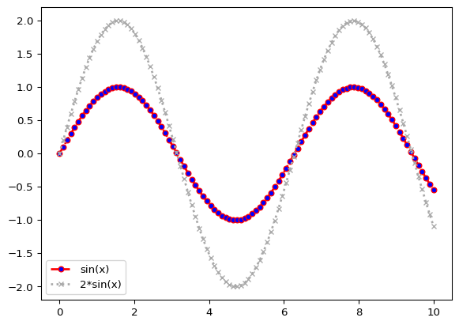
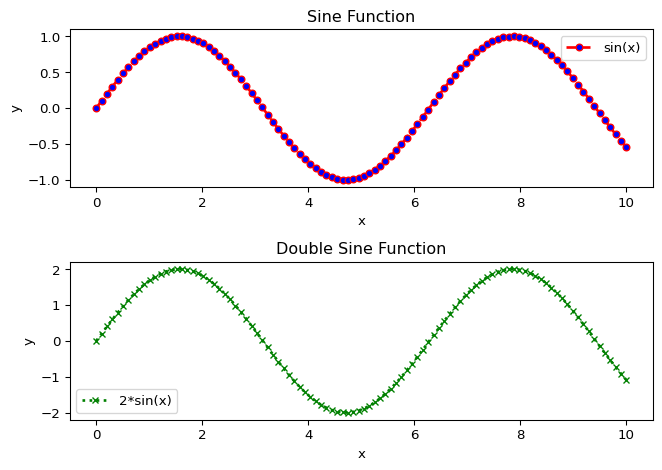
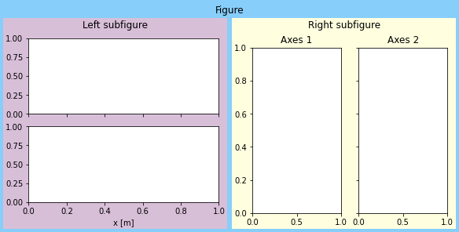

Basic Data Visualization Techniques
Difficulty level:
Basic Data Visualization Technique
The most popular data visualization libraries in Python is Matplotlib. Let`s start with the basic data visualization techniques using Matplotlib.
1. Generate some x-y data points.
2. Plot the data points.
To add more graphs to the same figure, use plt.plot() multiple times before plt.show(). If you want to create a new figure, use plt.figure() before plt.plot().
3. Adjust the plot.
The plot() function takes the following arguments:
- x-axis data points
- y-axis data points
- color: hex, or color name (e.g., ‘red’, ‘blue’,‘black’), abbreviated (e.g., ‘r’, ‘b’,‘k’)
- linestyle: ‘-’, ‘–’, ‘-.’, ‘:’ or “solid”, “dashed”, “dashdot”, “dotted”
- marker: ‘o’, ‘x’, ‘+’, ’*‘, ’s’, ‘d’, ‘^’, ‘v’, ‘>’, ‘<’, ‘p’, ‘h’
- linewidth - width of the line
- alpha - transparency of the line
- markerfacecolor - color of the marker face
- markersize - size of the marker
- label - label for the data points
You have to call plt.legend() to show the labels.
plt.figure()
plt.plot(x, y, color='red', linestyle='dashed', linewidth=2, marker='o',
markerfacecolor='blue', markersize=5,
label='sin(x)')
plt.plot(x, 2*y, color='darkgrey', linestyle='dotted', linewidth=2, marker='x',
markerfacecolor='grey', markersize=5,
label='2*sin(x)')
plt.legend()
plt.show()
4. Adust the figure
This plot figure can be adjusted by changing the figure size, title, labels, and so on.
plt.xlabel(): Set the x-axis label of the current axis.plt.ylabel(): Set the y-axis label of the current axis.plt.title(): Set a title for the axes.plt.legend(): Place a legend on the axes.plt.grid(): Configure the grid lines.plt.xlim(): Get or set the x-limits of the current axes.plt.ylim(): Get or set the y-limits of the current axes.plt.xticks(): Get or set the current tick locations and labels of the x-axis.plt.yticks(): Get or set the current tick locations and labels of the y-axis.plt.figure(): Create a new figure.plt.show(): Display a figure.
plt.figure(figsize=(4, 4), dpi=100)
# Create a figure with a specific size and resolution
plt.plot(x, y, color='red', linestyle='dashed', linewidth=2, marker='o',
markerfacecolor='blue', markersize=5,
label='sin(x)')
plt.plot(x, 2*y, color='darkgrey', linestyle='dotted', linewidth=2, marker='x',
markerfacecolor='grey', markersize=5,
label='2*sin(x)')
plt.xlim([0, 10]) # set the x-axis limits
plt.ylim([-3, 3]) # set the y-axis limits
plt.xticks(np.arange(0, 11, 2)) # set the x-axis ticks
plt.yticks(np.arange(-3, 4, 1)) # set the y-axis ticks
plt.xlabel('x') # set the x-axis label
plt.ylabel('y') # set the y-axis label
plt.title('Sine and Double Sine Functions') # set the title of the plot
plt.grid(linewidth=0.1)# set the grid linewidth
plt.legend(loc='upper left') # set the location of the legend: upper left, upper right, lower left, lower right
plt.show()
Creating multiple plots
You can create multiple plots in the same figure by using the subplot() function.
plt.subplot(2, 1, 1)
plt.plot(x, y, color='red', linestyle='dashed', linewidth=2, marker='o',
markerfacecolor='blue', markersize=5,
label='sin(x)')
plt.xlabel('x')
plt.ylabel('y')
plt.title('Sine Function')
plt.legend()
plt.subplot(2, 1, 2)
plt.plot(x, 2*y, color='darkgrey', linestyle='dotted', linewidth=2, marker='x',
markerfacecolor='grey', markersize=5,
label='2*sin(x)')
plt.xlabel('x')
plt.ylabel('y')
plt.title('Double Sine Function')
plt.legend()
plt.tight_layout()
plt.show()
fig = plt.figure(figsize=(4,2),dpi=72,layout='constrained', facecolor='lightyellow')
# Create a figure with a specific layout and background color
# constrained layout automatically adjusts the subplots to fit the figure
fig.suptitle('Figure') # set the title of the figure object
subL, subR = fig.subfigures(1, 2) # create two subfigures
subL.set_facecolor('thistle') # set the background color of the left subfigure
sub_subL = subL.subplots(2, 1, sharex=True) # create two subplots in the left subfigure
sub_subL[1].set_xlabel('x [m]')
subL.suptitle('Left subfigure') # set the title of the left subfigure
subR.set_facecolor('lightskyblue') # set the background color of the right subfigure
sub_subR = subR.subplots(1, 2, sharey=True)
sub_subR[0].set_title('Axes 1') # set the title of the first subplot in the right subfigure
sub_subR[1].set_title('Axes 2') # set the title of the second subplot in the right subfigure
subR.suptitle('Right subfigure')Text(0.5, 0.98, 'Right subfigure')
Subfigures and Gridspec
You can also create subplots and gridspecs to create more complex layouts.
Exercises
Download it locally and try to solve the exercises.
Or open it in Google Colab: